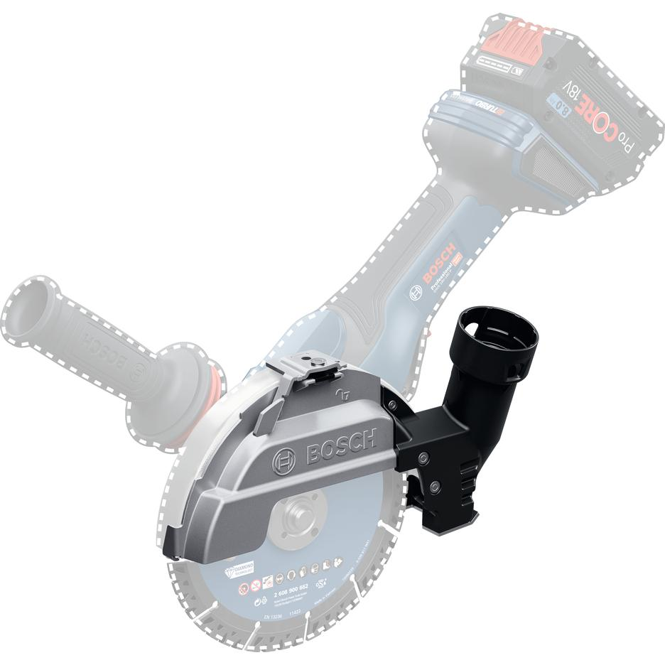
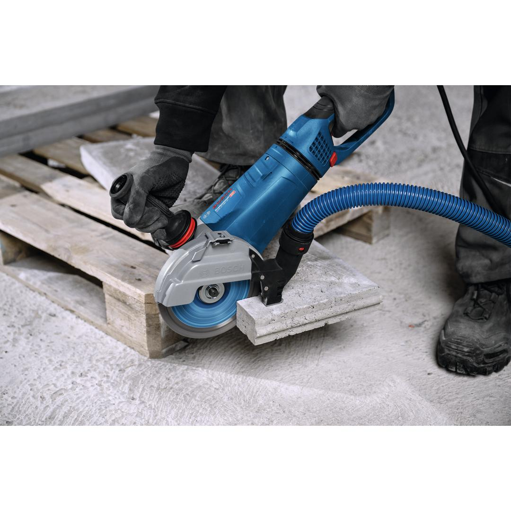
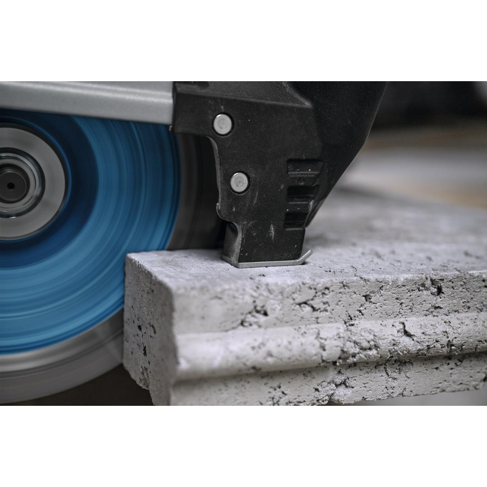
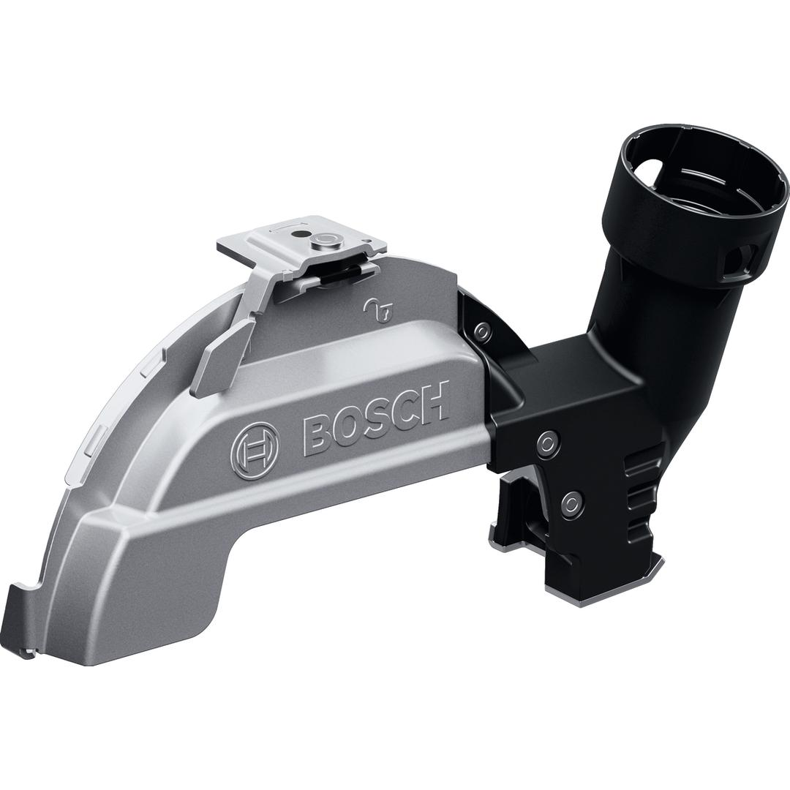

1600A033ZB




Cutting into concrete or stone creates fine silica dust, an airborne hazard that can cause long-term respiratory issues. Designed to extract dust at the source, the GDE 180-CG Professional dust attachment makes dustless cutting possible and is compatible with all Bosch Professional angle grinders with 180mm disc diameter. Thanks to the same simple and intuitive clip-on mechanism as the protective cutting guard, you can simply ‘click' the dust attachment onto the guard for grinding without needing to disassemble disc nor guard. After it is securely in place, connect the dust attachment to a dust extractor via the Click & Clean connecting interface – for seamless dust extraction and a healthier working space with almost no dust.
| Suitable for cutting disc diameter |
180 mm |
| Compatible with |
GWS 18V-180 P; GWS 18V-180 PC; GWS 14-180 – GWS 30-180; GWS 2000-180; GWS 2200-180 |
| Weight |
0.400 kg |
| Tool dimensions (width) |
81 mm |
| Tool dimensions (length) |
249 mm |
| Tool dimensions (height) |
135 mm |
Toolless clip-on dust attachment for cutting with 180mm angle grinders
The Bosch GDE 180-CG Professional dust attachment can be used to extract dust when cutting concrete, stone, or brick. It is highly recommended for tradespeople who come into frequent contact with such materials, such as landscapers, gardeners, roofers, rough carpenters, and framers.
The Bosch GDE 180-CG Professional is a toolless clip-on dust attachment that seamlessly connects to dust extractors via the Bosch Professional Click & Clean connecting interface.